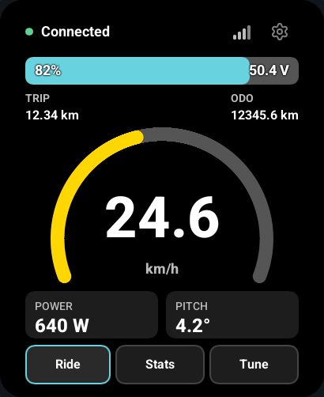

Turn the display on, choose your vehicle integration, and connect to your bike. Start with the browser simulator if you want to learn the screens before installing firmware.
Screenshots in these guides are software previews with simulated values. They show the interface, not a measured ride or a completed hardware acceptance test.

What you need
- A supported Waveshare ESP32-S3 Touch AMOLED 2.06-inch or GUITION JC4880P443C 4.3-inch board, and a USB data cable.
- A VESC-based bike running Wheelie Fun Bike, wheel-e, or a compatible generic VESC setup.
- The firmware image matching your exact board. Use the browser installer for the first USB installation, or follow building and installing for PlatformIO.
The Waveshare target is 410 × 502 pixels with CO5300 display and FT3168 touch. GUITION is 480 × 800 with ST7701S display and GT911 touch; its ESP32-C6 companion needs compatible radio firmware. See Waveshare setup and USB recovery or the GUITION setup and silicon revision requirements before installation. Firmware for different boards and revisions is not interchangeable.
1. Power up
Connect USB power and let the dashboard appear. If a screen lock was previously configured, unlock the display before continuing. With no saved bike, Disconnected is normal while the Settings vehicle section fills with nearby devices. A saved connection may show Reconnecting.
Tap the cog in the upper-right corner to open Settings. Set your preferred brightness, speed units and temperature units. Settings > Orientation cycles through 0°, 90°, 180° and 270°; touch coordinates rotate with the interface. These preferences are saved across restarts.
2. Choose the bike integration
Open Settings > Vehicle > Vehicle integration before connecting. Auto is the default: it probes discovered motor controllers for the supported WFB and wheel-e packages and uses the first verified match. This works over BLE, CAN and UART, including renamed devices. Choose a specific integration when you want to require that package; generic VESC provides read-only standard telemetry.
| Integration | What to expect |
|---|---|
| Wheelie Fun Bike | Dashboard, ride-response presets, speed-limit controls and supported bike locking. |
| wheel-e | Dashboard and supported bike locking. Configure wheel-e tuning through VESC Tool. |
| VESC | Standard telemetry and local display features. Package-specific tuning and bike locking are unavailable. |
The branding and available controls follow the integration. A matching name only affects discovery ranking; it does not establish which package is installed. Auto verifies package replies before enabling integration-specific features.
3. Connect
BLE is the default. Open Settings > Vehicle and select your device. Recognizable bike names appear first, while other VESC UART devices remain selectable. If the upstream device requires encrypted BLE, enter its six-digit pairing PIN when prompted.
The display then discovers the main VESC using CAN ping and firmware/package queries. It uses the first matching motor controller with the custom package installed. This controller may be the one directly connected to BLE, or another controller reached through CAN.
Wait for live values before using tuning or bike-lock controls. -- means data is unavailable or stale; it does not mean the measured value is zero. See connections for CAN, UART and phone proxy setup.
4. Learn the screens
- Ride shows speed, battery, power, pitch and connection state. In portrait, TRIP and ODOMETER sit in the upper corners of the speedometer area.
- Tune exposes only the controls supported by the selected integration. Draft changes take effect only after Apply and confirmation.
- Stats shows read-only electrical, distance, temperature, attitude and controller information, plus BMS details when available.
- The cog opens Settings. Its sections contain display/units, vehicle connection and integration, screen lock, phone connection, and system controls.
Swipe horizontally between Ride, Stats and Tune. Vertical drags scroll lists and longer pages. A short horizontal swipe returns to the current page; there is no wrap from Tune back to Ride.
5. Add a screen lock, if wanted
Open Settings > Set screen lock, choose Use PIN or Use pattern on the entry page, and enter the six-digit code or six-dot pattern twice. There is no default credential or recovery-code interface. After unlocking, Settings > Phone BLE code shows the numeric passkey for pairing your phone to the display. See PINs, patterns and pairing for dot numbering and bond changes.
Lock screen protects the display controls. Lock bike and screen also requests the package's supported lock command. The display waits for matching telemetry before reporting the bike lock as confirmed. A locked display dims to black after its selected timeout; tap once to wake it, then enter the PIN or draw the configured pattern. The wake tap is consumed.
The configured screen-lock credential also protects the phone BLE proxy when enabled. An upstream VESC Express pairing PIN is separate and does not become the proxy PIN. See PINs and locking.
6. Keep it up to date
Open Settings > Wi-Fi, select a network and enter its password. Then open Settings > Firmware updates, check the release, and confirm installation. Keep power connected while updating; restart only when offered.
An image must match the board and pass validation. If no public release is available, the display reports that without replacing the installed firmware. See updates and maintenance.
Where next
Use the display · Connections and phone proxy · Troubleshooting · Build the firmware · Contribute